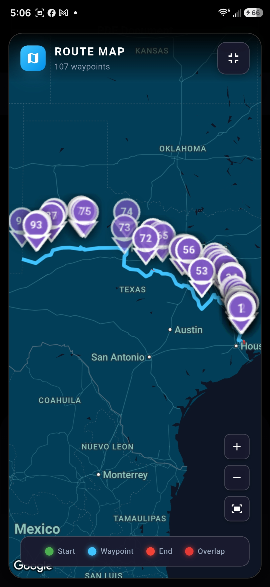

Permit in
Add the original PDF or permit images. The source stays attached to the trip.
14-day free trial, then $5/month during alpha. Get the app.
Permit Route Pro is an Android app for oversize and overweight permit routing. Import a permit, review and correct the mapped route, save the accepted route record, and resume the verified trip for navigation.

Approved-route map, current field build
Add the original PDF or permit images. The source stays attached to the trip.
Review extracted roads, turns, origin, destination, and restrictions in plain language.
Compare every waypoint with the permit, make corrections, then store the audit record.
Open the verified trip and navigate along the permit-approved path.
Start a trip without a name or dates, collect the state permit PDFs from your email into the same saved trip, and review the entire route together before navigation.
Read the permit route review walkthrough for the steps from importing a permit to resuming a verified trip.
Expect bugs, incomplete features, and limited state support. Start a 14-day free trial after creating an account and verifying your email. After the trial, subscribe for $5/month during alpha to continue. Selected alpha testers have free access.
Permit Route Pro processes PDF files more reliably and accurately than camera captures or saved pictures.
Routing coverage legend
Coverage labels describe the current permit-routing implementation, not whether a state permit is valid for travel.
| Full routing support | Colorado, Illinois, Indiana, Kentucky, Nevada, New Mexico, Ohio, Texas, and Virginia |
|---|---|
| Partial support | Georgia, Idaho, Montana, South Dakota, Utah, and Wyoming |
| In progress | Arizona, Arkansas, Louisiana, and Oklahoma |
| Routing not yet supported | Alabama, Alaska, California, Connecticut, Delaware, Florida, Hawaii, Iowa, Kansas, Maine, Maryland, Massachusetts, Michigan, Minnesota, Mississippi, Missouri, Nebraska, New Hampshire, New Jersey, New York, North Carolina, North Dakota, Oregon, Pennsylvania, Rhode Island, South Carolina, Tennessee, Vermont, Washington, West Virginia, and Wisconsin |
Partial support varies by state and permit format; compare every route with the issued permit before travel. In-progress states have routing work under development. Routing is not yet available in the remaining states.
Share a permit for routing research to help expand and improve state coverage.